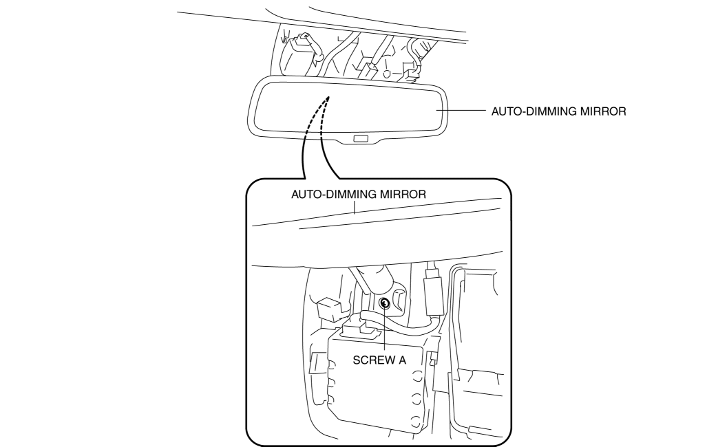

< Previous
Next >
2014 -
Mazda6 -
Body and Accessories
AUTO-DIMMING MIRROR REMOVAL/INSTALLATION
With Forward Sensing Camera (FSC) Or Smart City Brake Support (SCBS)
1. Disconnect the negative battery cable. (See NEGATIVE BATTERY CABLE DISCONNECTION/CONNECTION [SKYACTIV-G 2.5].)
2. Remove the cover. (See FORWARD SENSING CAMERA (FSC) REMOVAL/INSTALLATION.)
3. Disconnect the auto-dimming mirror connector.
4. Remove screw A.

5. Remove the auto-dimming mirror in the direction of the arrow (1) shown in the figure.
6. Install in the reverse order of removal.
Without Forward Sensing Camera (FSC) Or Smart City Brake Support (SCBS)
1. Disconnect the negative battery cable. (See NEGATIVE BATTERY CABLE DISCONNECTION/CONNECTION [SKYACTIV-G 2.5].)
2. Remove the screw B.
3. Remove the auto-dimming mirror in the direction of the arrow (1) shown in the figure.
4. Detach tabs while pressing cover No.2 in the direction of the arrow (2) shown in the figure, then remove cover No.2 in the direction of the arrow (3).
5. Disconnect the auto-dimming mirror connector.
6. Remove the auto-dimming mirror in the direction of arrow (4) from the mirror base.
7. Install in the reverse order of removal.
< Previous
Next >
© 2012 Mazda North American Operations, U.S.A.